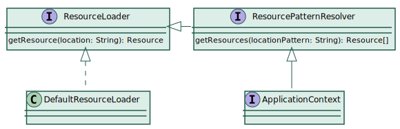

{kind=link}
Resource resource = ctx.getResource("classpath:config.properties");Lektion 4 - Externe Konfiguration
Externe Konfiguration
Themen
Zugriff auf Ressourcen
Konfiguration über eine Properties-Datei
Umschalten zwischen Konfigurationsdateien
Spring Expression Language
Spring Environment
Implementierung einer PropertySource
Flexible Konfiguration mittels Profilen
Verwendung der @Conditional Annotation
Ressourcen
Was sind Ressourcen?
Ressourcen sind beliebige Dateien (Bilder, Schriften, Konfigurationsdateien, Daten, etc.)
java.net.URLhat Einschränkungen:Kein Zugriff auf Ressourcen im classpath
Kein Zugriff auf Ressourcen relativ zu ServletContext
Keine Prüfung, ob Ressource existiert
Spring bietet eigene Abstraktion über das
ResourceInterface
Das Resource Interface
Resource.java
public interface Resource extends InputStreamSource {
boolean exists();
URL getURL() throws IOException;
File getFile() throws IOException;
Resource createRelative(String relativePath) throws IOException;
String getFilename();
String getDescription();
...
}InputStreamSource.java
public interface InputStreamSource {
InputStream getInputStream() throws IOException;
}Resource Implementierungen

ResourceLoader

Resource Location
| Präfix | Beispiel | Erklärung |
|---|---|---|
classpath: | classpath:com/myapp/config.xml | Aus dem classpath |
classpath*: | classpath*:META-INF/beans.xml | Alle META-INF/beans.xml im classpath |
file: | Datei /data/config.xml | |
http: | Als URL | |
(ohne) | com/myapp/config.xml | Abhängig vom |
| Die Resource Abstraktion kann man auch ohne den Rest von Spring verwenden. |
Verwendung einer Ressource
Ressource über ApplicationContext laden
Resource per Dependency Injection
@Value("classpath:config.properties") private Resource config;
Implementieren von ResourceLoaderAware
public class ResourceLoaderAwareBean implements ResourceLoaderAware, InitializingBean {
private ResourceLoader resourceLoader;
private Properties config;
@Override
public void setResourceLoader(ResourceLoader resourceLoader) {
this.resourceLoader = resourceLoader;
}
@Override
public void afterPropertiesSet() throws Exception {
Resource resource = resourceLoader.getResource("classpath:config.properties");
config = new Properties();
config.load(resource.getInputStream());
}
}Jede Bean, die ResourceLoaderAware implementiert erhält den ResourceLoader.
Aufgabe 1: Eine Properties-Datei mittels Resource-Abstraction laden
Nutzen Sie den ApplicationContext in WatorAppSimple, um die wator-prod.properties Datei
als Resource zu laden und geben Sie den Inhalt dieser Datei mit der Methode dumpProperties aus.
WatorAppSimple.java
private void dumpProperties(InputStream is) throws IOException {
Properties props = new Properties();
props.load(is);
props.list(System.out);
}Externe Konfiguration
Motivation
Manche Konfigurationswerte sind
zum Entwicklungszeitpunkt noch nicht bekannt,
sind abhängig von der Laufzeitumgebung oder
müssen nachträglich änderbar sein.
Im Java-Umfeld werden dafür meistens Properties-Dateien verwendet.
Diese enthalten einfache Key-Value Paare:
server.port=8081 debug: true
| Man kann entweder '=' oder ': ' als Trenner zwischen Schlüssel und Wert verwenden. |
@PropertySource
Bei Spring bindet man eine Properties-Datei über die @PropertySource Annotation ein:
@Configuration
@PropertySource("classpath:app.properties")
public class MyJavaConfig {
//...
}Das XML-Gegenstück ist:
<context:property-placeholder location="classpath:app.properties" />Zugriff auf Property-Werte
Platzhalter der Form ${key} werden in Annotationsparameter durch die
entsprechenden Property-Werte ersetzt.
Häufig wird das in Kombination mit der @Value Annotation verwendet:
@Value("${server.port}")
private int serverPort;
@Value("http://localhost:${server.port}/")
private String serverUrl;
@Bean
SomeService someService(@Value("${debug}") boolean debug) {In XML genügt es direkt die ${key} Platzhalter in Werten zu verwenden.
Defaultwerte
Man kann auch Platzhalter mit Defaultwerten definieren. Das lässt sich sogar schachteln:
AppConfig.java
@Value("${service.port:9080}")
private int servicePort;
@Value("${service.url:http://localhost:${service.port:9080}/}")
private String serviceUrl;Platzhalter lassen sich insbesondere auch für die @PropertySource verwenden:
@PropertySource("classpath:config-${platform:dev}.properties")| Damit sind unterschiedliche Konfigurationen für verschiede Plattformen möglich. |
Werte für Platzhalter setzen
Platzhalter-Werte können auch über Umgebungsvariablen oder System-Properties (-Dservice.port=5555) angegeben
werden, diese überschreiben ggf. entsprechende Werte aus Properties-Dateien. Dabei haben System-Properties
die höchste Priorität.
| Wie überall bei Java kommt es bei Properties auf Groß-/Kleinschreibung an! |
PropertySourcesPlaceholderConfigurer
Bei älteren Spring-Versionen (vor 4.3) war es notwendig explizit einen PropertySourcesPlaceholderConfigurer
anzulegen, damit ${key} Platzhalter ersetzt wurden. Dieser musste im ApplicationContext vorhanden sein, bevor
der 1. Platzhalter zu interpretieren war, deshalb wurde er mit einer static Methode erzeugt:
@Bean
public static PropertySourcesPlaceholderConfigurer placeholderConfigurer() {
return new PropertySourcesPlaceholderConfigurer();
}Nicht mit dem veralteten PropertyPlaceholderConfigurer verwechseln! |
Aufgaben 2: Externe Konfiguration über Properties Dateien
Ergänzen Sie die
WatorBaseConfigum die@PropertySourceNotation, so dass die wator-prod.properties geladen wird.Machen Sie die entsprechenden Werte über
fish.breedTime,shark.breedTimeundshark.starveTimekonfigurierbar. Die Defaultwerte sollen bestehen bleiben.Konfigurieren Sie die Wiederholungsrate für den
Timermit der Propertytick.millis. Sie müssen dafür die Verzögerung überfixedDelayStringstatt überfixedDelayangeben.Erstellen Sie eine Kopie wator-dev.properties der wator-prod.properties und sorgen Sie dafür, dass man mit
-Dplatform=devzwischen den Konfigurationen umschalten kann.Stellen Sie sicher, dass die Anwendung auch noch läuft, wenn Sie z.B. mit
-Dplatform=noneaufgerufen wird. Sie müssen dafür bei der PropertySourceignoreResourceNotFound = truesetzen.Optional: Falls Sie noch Zeit haben, dann führen Sie die gleichen Änderungen bei der XML basierten Konfiguration durch. Sie benötigen dafür `<context:property-placeholder …/>'.
| Sie sehen die aktuellen Einstellungen beim Starten der Applikation in den Logausgaben. Dafür sorgt der LogBeansPostProcessor. |
Spring Expression Language (SpEL)
Motivation
Für den Fall, dass einfache
${}Platzhalter nicht ausreichen,
bietet Spring eine sehr mächtige Expression Language.Expressions werden genauso wie Platzhalter verwendet, aber haben
die Form#{}, z. B.#{ 1 + 1 }.Man kann auch Platzhalter in Expressions verwenden,
beispielsweise:#{ ${service.port} + 1 }.
SpEL Beispiele
AppConfig.java
@Value("#{ 'http://localhost:' + (${server.port} + 1) }") String urlValue,
@Value("#{ T(java.lang.Math).random() * 100.0 }") double randomValue,
@Value("#{ someService.serviceValue }") int beanProperty,
@Value("#{ systemProperties['service.port'] ?: 8888 }") int systemProperty, // Elvis Operator
@Value("#{ {1, 3, 5, 7} }") List<Integer> listValue,
@Value("#{ {banane: 'gelb', tomate: 'rot', gurke: 'grün'} }") Map<String, String> mapValue,
@Value("#{ new int[]{3,2,1} }") int[] arrayValue, @Value("#{ 'abcde'.substring(1, 4) }") String subStringAufgabe 3: Verwendung der Spring Expression Language (SpEL)
Nutzen Sie EL-Ausdrücke, um die Werte folgendermaßen zu setzen:
sharkBreedTime = fishBreedTime * 2 sharkStarveTime = fishBreedTime * 2 - 2
Für die fishBreedTime soll zusätzlich gelten:
fishBreedTime = Wert aus der Property fish.breedTime falls gesetzt Andernfalls: Zufallswert zwischen 2 und 20Wie hätten Sie diese Aufgabe ohne Expression-Language gelöst?
Environment
Hintergrund
Das Environment ist die Quelle für Platzhalter-Werte.
Statt über die @Value Annotation kann man das
Environment auch direkt verwenden:
@Autowired
private Environment env;Zum Zugriff auf die Werte bietet Environment verschiedene getProperty Methoden, z.B. mit Typ und Defaultwert:
int port = env.getProperty("service.port", Integer.class, 8079);| Gegenüber der Expression Language bietet der direkte Zugriff auf das Environment den Vorteil, dass Syntaxfehler direkt vom Compiler erkannt werden. |
Environment Datenstruktur

Die Reihenfolge der Property Sources bestimmt die Priorität (der Erste gewinnt).
PropertySource implementieren
public class SimpleMapPropertySource extends PropertySource<Map<String, Object>> {
public SimpleMapPropertySource(String name, Map<String, Object> source) {
super(name, source); (1)
}
@Override
public Object getProperty(String name) { (2)
return source.get(name);
}
}| 1 | Jede PropertySource hat einen Namen und Optional eine Quelle für die Propertywerte |
| 2 | Die getProperty() Methode muss auf jeden Fall implementiert werden |
PropertySource verwenden
SimpleMapPropertySource propertySource = new SimpleMapPropertySource("simple-map", map);
AnnotationConfigApplicationContext ctx = new AnnotationConfigApplicationContext(); (1)
ctx.getEnvironment().getPropertySources().addLast(propertySource); (2)
ctx.register(AppConfig.class);
ctx.refresh(); (3)| 1 | Keine Konfiguration angeben, um refresh() zu verhindern |
| 2 | Registriert propertySource als letztes, d.h. mit niedrigster Priorität |
| 3 | Mit refresh() wird der ApplicationContext initialisiert |
| @PropertySource’s in der Konfiguration werden beim Refresh hinzugefügt! |
Aufgaben 4: Environment selbst implementierte PropertySource
Nutzen Sie nun das
Environment, um die beiden Strategies zu konfigurieren. Die Applikation soll sich genauso wie nach Aufgabe 2 verhalten.Implementieren Sie eine
RandomPropertySource, die für jede der 3 Strategy-Properties einen Zufallswert zwischen 1 und 100 zurückliefert und binden Sie dieseRandomPropertySourceein.
Profile
Einsatz von @Profile
Unterschiedliche Umgebungen (Produktion, Entwicklung) erfordern unterschiedliche Konfiguration.
Profile kommen zum Einsatz, wenn Einstellungen (Konfigurationswerte) nicht ausreichen.
Mit der Annotation
@Profile("profilname")legt man fest, dass eine Konfiguration nur gelten soll, wenn das entsprechende Profil aktiviert ist.Die
@ProfileAnnotation kann man sowohl auf eine ganze (Konfigurations-)Klassen als auch auf einzelne Bean-Methoden anwenden.Profile lassen sich mit
&(und),|(oder),!(Negation) und Klammern verknüpfen:@Profile("production & (us-east | eu-central)")
Profile aktivieren
Man kann mehrere Profile gleichzeitig aktiveren, entweder programmatisch:
ctx.getEnvironment().setActiveProfiles("profile1", "profile2");Oder über die spring.profiles.active Property, z. B. mit:
-Dspring.profiles.active="profile1,profile2"
Wenn kein Profil aktiviert wurde, dann ist immer das default Profil aktiv.
Implementierung von @Profile
org.springframework.context.annotation.Profile
@Target({ElementType.TYPE, ElementType.METHOD})
@Retention(RetentionPolicy.RUNTIME)
@Documented
@Conditional(ProfileCondition.class) (1)
public @interface Profile {
String[] value();
}| 1 | @Profile ist eine Metaannotation, für @Conditional(ProfileCondition.class). |
Mit @Conditional kann man die Registrierung einer Konfiguration oder einer Bean mit einer
Bedingung (Condition) verknüpfen.
Implementierung der ProfileCondition
org.springframework.context.annotation.ProfileCondition
class ProfileCondition implements Condition {
@Override
public boolean matches(ConditionContext context, AnnotatedTypeMetadata metadata) { (1)
MultiValueMap<String, Object> attrs = metadata
.getAllAnnotationAttributes(Profile.class.getName());
if (attrs != null) {
for (Object value : attrs.get("value")) {
if (context.getEnvironment()
.acceptsProfiles(Profiles.of((String[]) value))) {
return true;
}
}
return false;
}
return true;
}
}| 1 | Die matches Methode ist die einzige Methode, die jede Condition implementieren muss. |
Aufgabe 5: Profile und Conditional
Ändern Sie die
WatorFxConfigso, dass dort 2 verschiedeneWritableImageTorusBeans in unterschiedlichen Größen erstellt werden. Nutzen Sie dafür die Profile big und default.Optional: Implementieren Sie eine Annotation
@Bignebst zugehöriger Condition, so dass Sie@Profile("big")durch@Bigund@Profile("default")durch@Big(false)ersetzen können.
Zusammenfassung
ApplicationContext Konfiguration
XML-Config
Java-Config
Annotationsbasierte Konfiguration
Externe Konfiguration
Zugriff auf Ressourcen
Konfigurationswerte angeben und auswerten
Spring Expression Language
Environment
Profile und Conditional
Externe Konfiguration
Fragen?